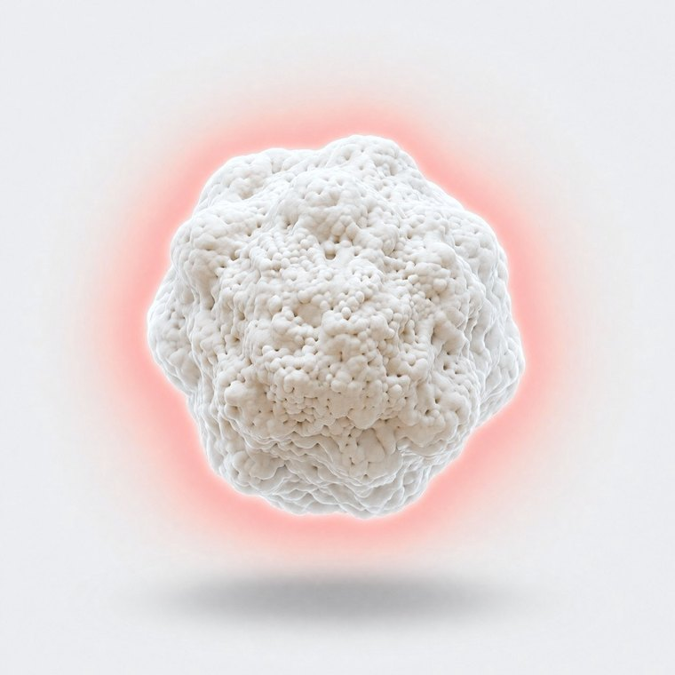
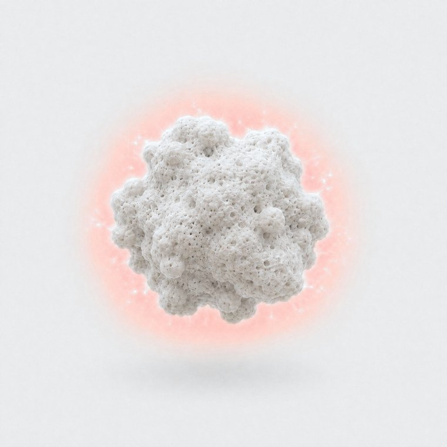
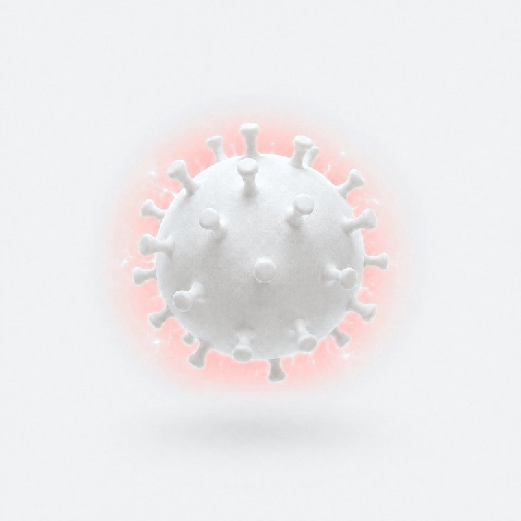
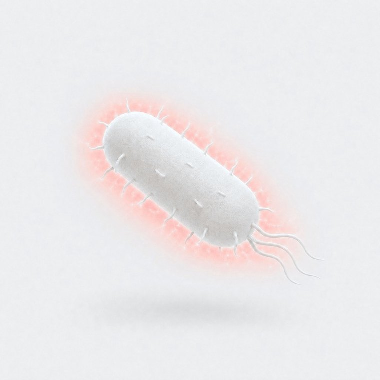

What they carry, we capture.
Positive polarity captures particles, destroys up to 99% of pathogens through a physical mechanism.
About
Technology
Evidence
Testimonial
Contact

C-POLAR is a health science company. Our patented NanoFlashing is a permanent positive polarity (3P) engineered into each of our five verticals. It attracts and captures ultrafine particles, wildfire smoke, PFAS and pollen — and destroys up to 99% of a broad-spectrum of viruses, bacteria and fungal spores through a physical mechanism.
5 Applications
Down where we live,
they are full of pollutants.





Applications
Applications
Applications
Applications
Applications